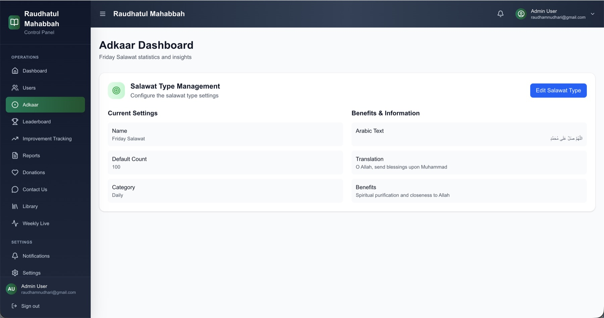

COMMUNITY PLATFORM
Raudhatul Mahabbah
Mobile and web experiences for a religious community, including content, tasbih sessions, leaderboards, reporting and donation flows.
MY CONTRIBUTION
Backend APIs, mobile workflows, admin tooling and deployment.
Professional work · Employer / client-owned product